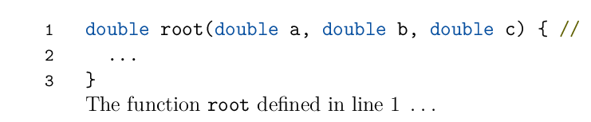
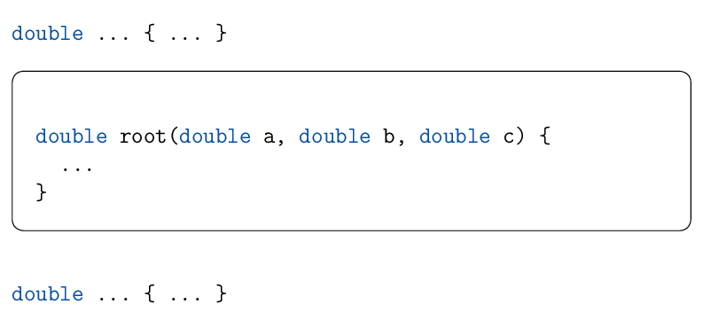

New escape mechanism for t-vim
Posted on April 28, 2020
The t-vim module has been on a maintenance only mode for while, so I am
happy to announce a release which adds a new feature: a new method to escape
to TeX using /BTEX and /ETEX tags.
The t-vim module is a syntax highlighter for ConTeXt which uses vim editor
to do the actual syntax highlighting. However, sometimes one needs to use a
ConTeXt macro within the code listing, for example to reference a particular
line number.
\starttyping and other syntax highlighting methods in ConTeXt, provide a
means to escape to TeX. In the old days of MkII, anything inside /BTEX and
/ETEX tags was not parsed and passed verbatim to TeX; in MkIV, there is a
fancier version of this escape mechanism.
The syntax highlighting in \starttyping is done for a handful of languages
for which Hans has written a syntax parser. So, relatively speaking, it is
simply to add such an escape mechanism in the parser. But that is not the
case for t-vim where the parsing is done by the vim editor according to
already existing syntax highlighting files for the editor. And, of course,
these files have no specifications for identifying or ignoring content inside
/BTEX and /ETEX tags.
I had always been reluctant to add such a feature because I did not see a
clean way to add it and, more importantly, there is was a partial escape
mechanism which kind-of works. In particular, it was already possible to allow
the contents of the Comment region to be passed to TeX. For example, one
could reference line numbers as follows:
\usemodule[vim]
\definevimtyping[CPP][syntax=cpp, escape=on, numbering=yes]
\starttext
\startCPP
double root(double a, double b, double c) { //\someline[ln:root]
...
}
\stopCPP
The function \type{root} defined in \inline[ln:root] \unknown
\stoptextwhich gives
So, we can reference a line but we are left with an empty comment marker on
line 1. Internally, the contents of the Comment region is passed on as
\SYN[Comment]{...}So, the TeX macros are inside a group, which means that certain macros cannot be used here. For example, it is not possible to use this escape mechanism to say draw a frame around a function. Enter the new escape mechanism!
The new mechanism is enabled by passing escape=command option to a
<vim>typing environment. When this option is enabled, the content between
/BTEX and /ETEX is passed directly to ConTeXt. For example, consider the
following:
\usemodule[vim]
\definevimtyping[CPP][syntax=cpp, escape=command]
\starttext
\startCPP
double ... { ... }
/BTEX\startframedtext[width=\localhsize,corner=round]/ETEX
double root(double a, double b, double c) {
...
}
/BTEX\stopframedtext/ETEX
double ... { ... }
\stopCPP
\stoptextwhich gives
Internally, when escape=command is enabled, the 2context.vim script
defines a new vim syntax highlighting region:
syntax region vimtypingTEXcomment start="/BTEX" end="/ETEX" transparent oneline containedin=ALL contains=NONEWhen parsing the file, contents of this region are passed directly to TeX
(without any wrapping \SYN[...]{...}). A big thanks to Christoph
Hintermüller, who submitted a pull request which implements this feature.
One needs to be aware that The <vim>typing environment uses a catcode table
where only \, { and } have their usual meaning, \n is active and
mapped to \obeyedline and space is active and mapped to \obeyedspace. As a
consequence:
- If you add a space after the comma in
\startframedtext[...,...], it will lead to an error: - There is an extra new line after the start and before the end of the frame.
In principle, it is possible to get rid of these by doing some catcode
jugglery when entering and leaving a
/BTEX ... /ETEXregion, but that hasn’t been implemented yet.
The old mechanism is now mapped to escape=comment; it can still be activated
using escape=on for backward compatibility reasons. For now, only one of the
escape mechanisms can be implemented. If someone can provide a convincing
argument why both are needed simultaneously, it is not too difficult to
provide an interface to implement both.
Stay tuned. Christoph also has a pull request which enables proper tagging for
<vim>typing, which allow these environments to be used in tagged PDF
documents and will export properly to XML. More on that later.
This entry was posted in T-Vim and tagged code formatting.